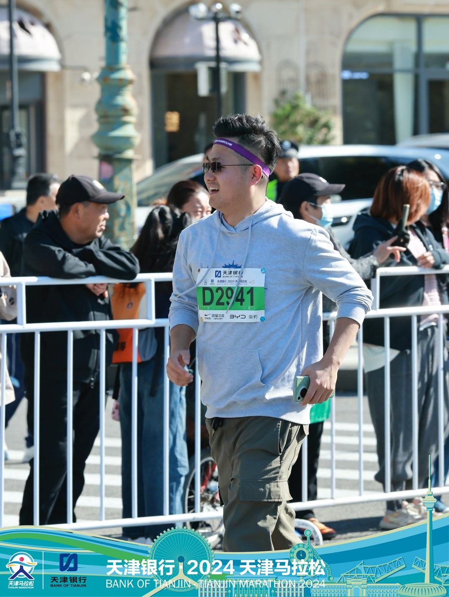
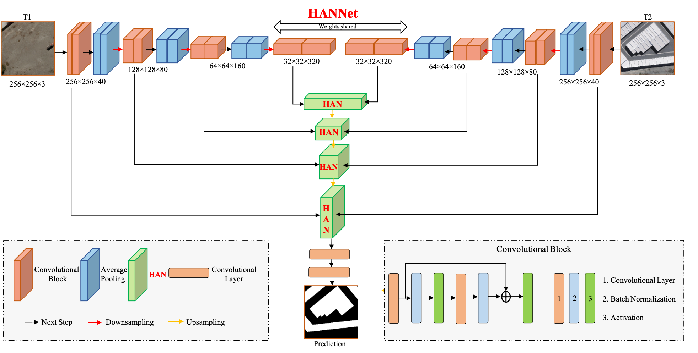
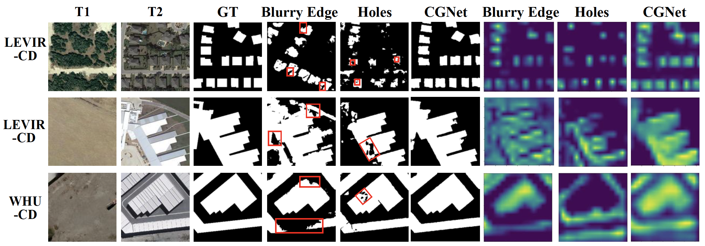
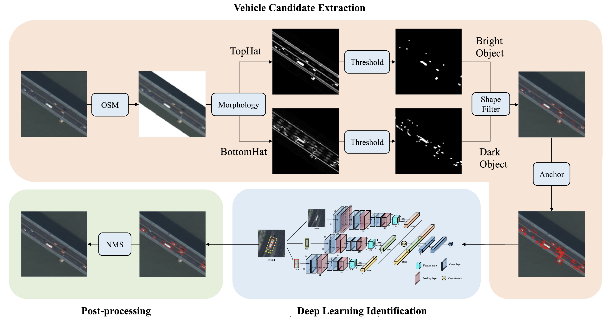
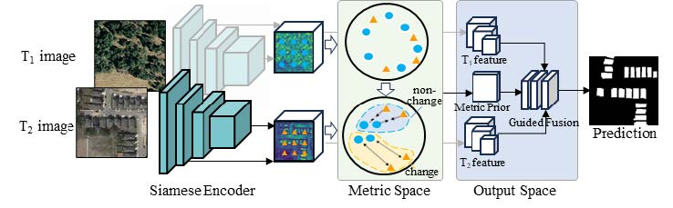
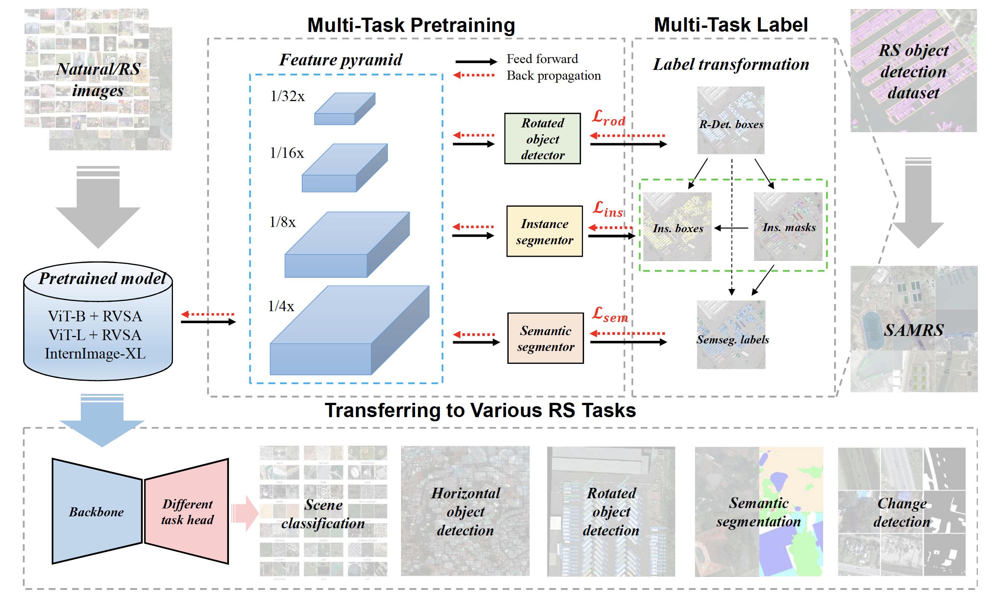
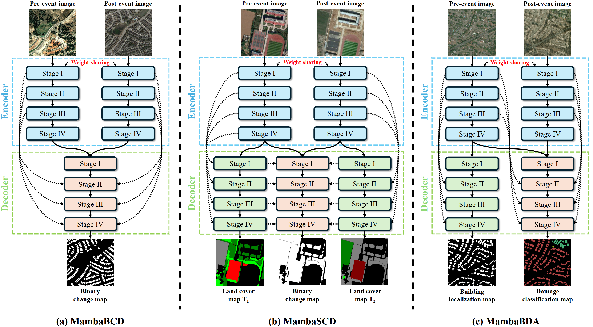
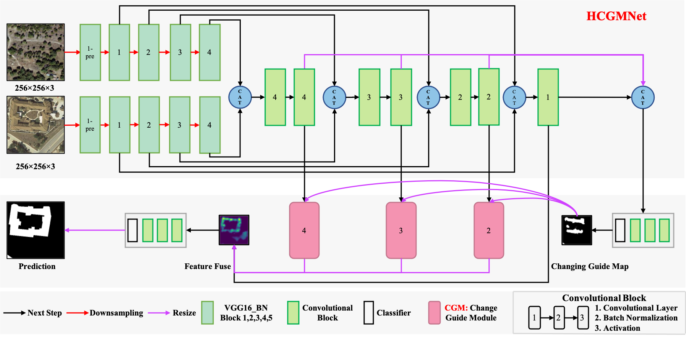
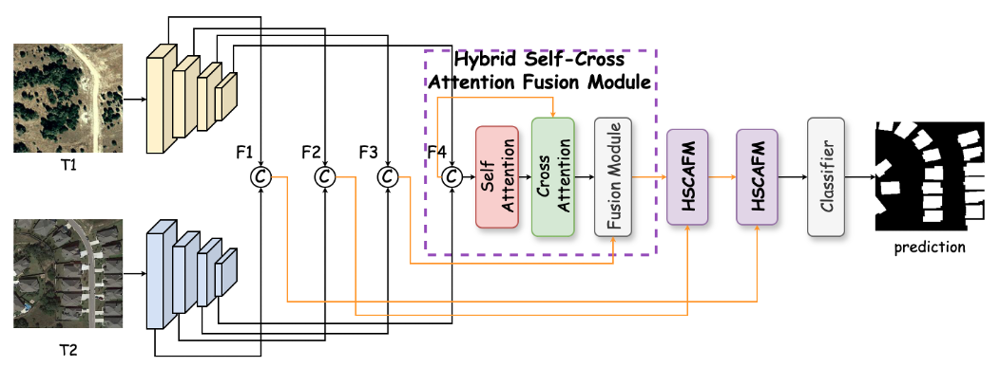

|  | Dr. Chengxi HAN (韩承熙 博士) |
News
- [2025.07] Our C2F-SemiCD has been selected as ESI Highly Cited Paper Paper！ (link)!
- [2025.07] A co-author paper MT-CYP-Net is accepted by JAG! (link)!
- [2025.07] Our Open-CD is accepted by ACM MM 2025 (link)!
- [2025.04] Our HyperSIGMA is accepted by TPAMI (link)!
- [2025.03] HSANet and other two co-author papers are accepted by IGARSS 2025 (homepage, poster)!
- [2025.01] Our CGNet has been selected as ESI Highly Cited Paper Paper！ (link)!
- [2024.11] Our ChangeMamba has been selected as ESI Highly Cited Paper and ESI Hot Paper！ (link)!
- [2024.09] I organized the first IEEE GRSS China Student Chapter Meeting in March 2024 and published the event in the GRSM in issue 3 of 2024.(link)!
- [2024.09] Our HANet has been selected as ESI Highly Cited Paper！ (link)!
- [2024.09] Our Open-CD Technical Report v1.0 is released on arXiv (link)!
- [2024.02] One paper（C2F-SemiCD and C2FNet） is acceptted by IEEE TGRS! (link)!
- [2024.01] I have been a Student Chapter Coordinator in the IEEE GRSS Administrative Committee (AdCom) organization executive committee since January 2024 (link)!
- [2023.12] I attended the NeurIPS 2023 at the New Orleans Ernest N. Morial Convention Center,USA (link)!
Promotion
Papers:
- [2025.04] HyperSIGMA高光谱大模型| 基金委网站 (新闻类)、武大测绘遥感国重 (新闻类)、 遥感与深度学习公众号 (算法类)、VALSE 2025人气海报奖｜11 / 398 (会议类) !
- [2025.04] IEEE GRSS First Student Chapter Excellence Award Testimonias获奖采访 | IEEE GRSS Website (官网)
Research Interest
I am working in remote sensing change detection and deep learning theory. Currently, I focus on the following research topics:- Change detection with bi-temporal very-high-resolution remote sensing images
- Semantic segmantaion in computer vision
- Object detection in VHR RS image
Co-authors
- Haonan Guo (郭昊南) , Meiqi Hu (胡美琪) , Hongruixuan Chen (陈洪瑞轩) , Jiepan Li (李杰潘)
- Di Wang (王迪) , Jiaqi Ma (马嘉祺) , Qidi Shu (舒奇迪) , Chuan Fu (付川) , Ting Duan (段婷)
- Yichu Xu (徐一楚) , Jiaqi Yang (杨佳琪) , Yuchun Miao (苗雨春) , Yao Jin (金垚) , Xiaolei Qin (秦晓蕾) , Lingyu Sun (孙凌瑜)
Education
- 2020.09-now Pursuing Ph.D in LIESMARS, Wuhan University. Supervisor: Prof. Liangpei Zhang & Bo Du & Chen Wu
- 2018.09-2020.06 M.E.Candidate in LIESMARS, Wuhan University. Supervisor: Prof. Liangpei Zhang & Bo Du & Chen Wu
- 2014.09-2018.06 B.E. in School of Geosciences and Info-Physics, Central South University.
Publications [  Citation:1000 ]
Citation:1000 ]
Journals:
 |
[1] HyperSIGMA: Hyperspectral Intelligence Comprehension Foundation Model
Di Wang∗, Meiqi Hu∗, Yao Jin∗, Yuchun Miao∗, Jiaqi Yang∗, Yichu Xu∗, Xiaolei Qin∗, Jiaqi Ma∗, Lingyu Sun∗, Chenxing Li∗, Chuan Fu, Hongruixuan Chen, Chengxi Han† , Naoto Yokoya, Jing Zhang†, Minqiang Xu, Lin Liu, Lefei Zhang, Chen Wu†, Bo Du†, Dacheng Tao, Liangpei Zhang† (TPAMI), 2025. (SCI Q1 TOP, IF=20.5) [ TPAMI Paper][ arXiv Paper][Code] |
 |
[2] C2F-SemiCD: A coarse-to-fine semi-supervised change detection method based on consistency regularization in High-Resolution Remote-Sensing Images
C. Han,C. Wu, M. Hu. J. Li, and H. Chen, IEEE Transactions on Geoscience and Remote Sensing (TGRS), 2024. (SCI Q1 TOP, IF=8.2) [Paper][Code] |
|  |
[3] HANet: A hierarchical attention network for change detection with bi-temporal very-high-resolution remote sensing images
C. Han,C. Wu, H. Guo , M. Hu. and H. Chen, IEEE Journal of Selected Topics in Applied Earth Observations and Remote Sensing (JSTARS), 2023. (SCI Q2 TOP, IF=5.5) [Paper][Code] |
|  |
[4] Change Guiding Network: Incorporating Change Prior to Guide Change Detection in Remote Sensing Imagery
C. Han,C. Wu, H. Guo, M. Hu. J. Li, and H. Chen, IEEE Journal of Selected Topics in Applied Earth Observations and Remote Sensing (JSTARS), 2023. (SCI Q2 TOP, IF=5.5) [Paper][Code] |
|  |
[5] Traffic density reduction caused by city lockdowns across the world during the COVID-19 epidemic: from the view of high-resolution remote sensing imagery
Wu, C., Zhu, S., Yang, J., Hu, M., Du, B., Zhang, L., Zhang, L., Han, C. and Lan, M., IEEE Journal of Selected Topics in Applied Earth Observations and Remote Sensing (JSTARS), 2021. (SCI Q2 TOP, IF=5.5) [Paper] |
|  |
[6] DeepCL: Deep Change Feature Learning on Remote Sensing Images in the Metric Space
H. Guo, B. Du, C. Wu, C. Han , and L. Zhang IEEE Transactions on Neural Networks and Learning Systems (TNNLS), 2023. (SCI Q1 TOP, IF=10.4) [Paper][Code] |
|  |
[7] MTP: Advancing Remote Sensing Foundation Model via Multi-Task Pretraining
D.Wang, J.Zhang,..,C. Han ,H.Guo, B. Du, L. Zhang, D.Tao IEEE Journal of Selected Topics in Applied Earth Observations and Remote Sensing (JSTARS), 2024. (SCI Q2 TOP, IF=5.5) [Paper][Code] |
|  |
[8] ChangeMamba: Remote Sensing Change Detection with Spatio-Temporal State Space Model
Hongruixuan Chen,Jian Song,Chengxi Han ,Junshi Xia, Naoto Yokoya IEEE Transactions on Geoscience and Remote Sensing(TGRS), 2024. (SCI Q1 TOP, IF=8.2) [Paper][Code] |
Conferences:
|  |
[1] HCGMNet: A hierarchical change guiding map network for change detection
C. Han, C. Wu and B. Du, Proceeding of the IEEE International Geoscience and Remote Sensing Symposium (IGARSS 2023), 2023. (EI,遥感顶会) [Paper][Code] |
|  |
[2] HSANET: A Hybrid Self-Cross Attention Network For Remote Sensing Change Detection
Chengxi Han ,Xiaoyu Su, Zhiqiang Wei, Meiqi Hu, Yichu Xu* Proceeding of the IEEE International Geoscience and Remote Sensing Symposium (IGARSS 2025), 2025. (EI,遥感顶会) [Paper][Code] |
Journal Reviewer:
- IEEE Transactions on Pattern Analysis and Machine Intelligence(TPAMI)
- IISPRS Journal of Photogrammetry and Remote Sensing(ISPRS)
- Geo-Spatial Information Science (GSIS)
- IEEE Transactions on Geoscience and Remote Sensing (TGRS)
- International Journal of Applied Earth Observation and Geoinformation(JAG)
- IEEE Journal of Selected Topics in Applied Earth Observations and Remote Sensing (J-STARS)
- International Journal of Remote Sensing (IJRS)
- CMC-Computers, Materials & Continua
Membership:
- IEEE, Student Member
- IEEE Geoscience and Remote Sensing Society (GRSS), Student Member
- ACM, Student Member
- ISPRS, Student Consortium
- 中国图形图像学会, 学生会员
- 2024.11,中国图形图像学会遥感图像专业委员会
Project
Maste&Ph.D.:
- 2021年8月-至今 | 基于深度学习的高分辨率遥感影像的变化检测算法，骨干
- 2021年5月-11月 | 联合国训练研究所UNITAR (The United Nations Institute for Training and Research) 实习，骨干
- 2019年2月-2020年5月 | 基于深度学习的高分辨率遥感影像的建筑物提取(语义分割)算法，骨干
- 2018年9月2019年2月 | 基于深度学习的高分辨率遥感影像的目标检测(深度学习)算法，骨干
- 2016年3月-2017年3月| 基于密集匹配的遥感影像的三维建模（国家级立项） 项目，骨干
- 2017年2月10-13日| 自动驾驶汽车如何影响高速公路运力?（美国大学生数学建模竞赛MCM/ICM 2017 C题），骨干
- 2016年9月14-18日| 开放小区对周边道路通行能力的影响（全国大学生数学建模竞赛CUMCM 2016 B题），骨干
Experience
Master & Ph.D.>:
 |
2024.01，I have served as a Student Chapter Coordinator in the Global Activities Group of the IEEE GRSS Administrative Committee (AdCom) Organization Executive Committee since January 2024.
The Geoscience and Remote Sensing Society (GRSS) is a technical Society of the Institute of Electrical and Electronics Engineers (IEEE). GRSS fosters engagement of its members for the benefit of society through science, engineering, applications, and education as related to the development of the field of geoscience and remote sensing.
[Organization Link] |
- 2023.07，IGARSS Deep Learning Methods for Change Detection II Session Chair｜IEEE国际地学与遥感大会中基于深度学习的变化检测方法II会议主席
- 2021.07-2022.07，湖北省学生联合会, 驻会执行主席
- 2020.10-2021.09，武汉大学研究生会,主席团成员、博士生分会主席
- 2019.10-2020.10，Chairman of Postgraduate Student Union of LIESMARS |武汉大学测绘遥感信息工程国家重点实验室研究生会，主席
- 2020.07-now， IEEE GRSS Wuhan Student Branch Chapte, Chair | IEEE地球科学与遥感协会武汉学生分会，主席
- 2018.10-2019.12， English GeoScience Cafe(EGSC),President（主席）
- 2022.11-2023.11， 湖北省教育系统“学习二十大 师生进基层”巡讲成员
- 2020.10-2021.10， 武汉大学第四届博士生宣讲团,副团长、拓新分团团长
- 2021.11-2023.11， 武汉大学青年讲师团,讲师
- 2020.07-2024.07， 武汉大学测绘遥感信息工程国家重点实验室2020级博士班，班长
- 2018.09-2020.09，武汉大学测绘遥感信息工程国家重点实验室2018级硕士2班，班长
Training
Master:
- 2023.08，航天强军承使命行业调研（北京飞行控制中心、航天五院、灾害研究院、中电科研究院、新华社、环球网），北京市
- 2023.07，ACM中国图灵大会 安保组志愿者
- 2021.5-2021.11， The United Nations Institute for Training and Research (UNITAR)， Trainee| 联合国训练研究所，实习生
- 2019.07，10th International Summer Student Seminar 3S-2019（ISPRS,MIIGAiK） | 第十届国际3S暑期研讨会（国际摄影测量与遥感学会,莫斯科国立测绘大学）
- 2021.07，全国大学生新党员培训示范班(韶山干部学院)，湖南韶山（武汉大学唯一代表）
- 2021.03，全国高校党史接力宣讲活动，湖北武汉
- 2021.12，清华大学博士生讲师团立言计划，湖北武汉
- 2021.04，武汉大学头雁训练营，湖北红安
- 2018.11，武汉大学研究生会骨干培训班，湖北武汉
- 2023.05，武汉大学遥感国重党委学习“二十大”培训班，江西萍乡
- 2019.08，International Summer School Volunteer, Wuhan University | 国际暑期学校志愿者，武汉大学
Awards
- 【24】2024.05，武汉大学优秀毕业生
- 【23】2023.12，武汉大优秀研究生标兵
- 【22】2023.07，武汉大学共青团理论学习先进个人
- 【21】2023.07，武汉大学测绘遥感信息工程国家重点实验室优秀共产党员
- 【20】2023.05，内蒙古 鄂托克 前旗 “五四青年奖章”
- 【19】2023.03，第五届“中科星图杯”国际高分遥感图像解译大赛冠军
- 【18】2022.07，IEEE GRSS 2022 Student Chapter Excellence Award,IEEE GRSS| 全球最佳学生分会奖
- 【17】2023.06，武汉大学十大珞珈风云学子提名奖
- 【16】2021.12，武汉大学金通尹奖学金
- 【15】2022.05，Outstanding student leader, Wuhan University | 武汉大学优秀学生干部
- 【14】2021.05，武汉大学优秀共青团干部
- 【13】2020.05，武汉大学优秀学生社团干部
- 【12】2019.12， Second Prize of Academic Scholarship, Wuhan University | 学业奖学金二等奖
- 【11】2022，2021，2019，Outstanding Graduate Student, Wuhan University | 武汉大学优秀研究生
- 【10】2021.11，武汉大学博士生宣讲团先进个人
- 【9】2018.12，Excellent Individuals in Graduate Student Academic and Scientific Activities, Wuhan University | 武汉大学研究生学术科技活动先进个人
- 【8】2021.12，武汉大学研究生实习实践先进个人
- 【7】2016.05，中南大学优秀团支书（1/10）
- 【6】2017.10，湖南省大学生数学建模竞赛一等奖
- 【5】2017.08，全国大学生节能减排大赛三等奖
- 【4】2017.12，全国大学生数学建模竞赛二等奖
- 【3】2017.04，美国大学生数学建模大赛一等奖
- ...
- 【2】2021.08，普通话水平测试等级证书，二级甲等
- 【1】2016.11， 心理咨询师证书，三级
Conference Experience
- 【19】2025年6月6-8日，赴珠海参加VALSE 2025 视与学习青年学者研讨会，Vision And Learning Seminar （link）
- 【18】2024年12月21-22日，赴哈尔滨参加第五届CSIG图像图形高峰论坛（link）
- 【17】2024年10月24-25日，赴北京参加第五届雁栖航天论坛（link）
- 【16】2024年5月13-14日，赴长沙参加国际摄影测量与遥感学会"智能感知与遥感应用”学术会议，ISPRS TC I Symposium on Intelligent Sensing and Remote Sensing Application（link）
- 【15】2024年5月5-8日，赴重庆参加2024视与学习青年学者研讨会，Vision And Learning Seminar（link）
- 【14】2024年3月29-30日，赴武汉参加2024 IEEE地球科学与遥感协会中国学生分会交流会（link）
- 【13】2024年3月8-10日，赴日本东京参加IEEE地球科学与遥感协会行政委员会全球年度会议，IEEE GRSS Administrative Committee (AdCom) Organization Executive Committee March Meeting（link）
- 【12】2024年1月12-13日，赴武汉参加IEEE地球科学与遥感协会中国区域主席战略会议，2024 IEEE GRSS China Chapter Strategical Planning Session（link）
- 【11】2023年12月10-16日，赴美国新奥尔良参加第三十七届神经信息处理系统会议，NeurIPS 2023（link）
- 【10】2023年9月14-16日，赴桂林参加IEEE地球科学与遥感协会分会主席会议暨遥感学术交流会（link）
- 【9】2023年7月28-30日，赴武汉参加2023 ACM 中国图灵大会（link）
- 【8】2023年7月16-21日，赴美国参加美国加利福尼亚州参加国际地球科学和遥感研讨会（IGARSS 2023），线上（link）
- 【7】2023年4月27-28日，赴北京参加第八届高分辨率对地观测学术年会（link）
- 【6】2023年3月17-18日，赴厦门参加第五届中科星图杯国际高分遥感图像解译大赛会议（link）
- 【5】2020年10月28-29日，赴郑州参加中国测绘学会2020学术年会（link）
- 【4】2019年11月15-17日，赴桂林参加大数据时代测绘地理信息科学进展暨数字广西国际研讨会link
- 【3】2019年8月18-24日，赴俄罗斯莫斯科参加莫斯科国立测绘大学MIIGAiK 测绘遥感国际暑期研讨班（3S）（link）
- 【2】2019年7月2-9日，参加武汉大学第九届地球空间信息科学国际研究生暑期学校（link）
- 【1】2019年4月11-14日，赴合肥参加VALSE 2019 视与学习青年学者研讨会，Vision And Learning Seminar（link）
Presentation
Maste&Ph.D.:
- 【1】2021.05.25，百名博士生颂百年｜韩承熙：“九一二操场”的故事｜ 武汉大学党委研究生工作部网站（link）
- 【2】2021.04.26，29名武大博士生，成团！｜ 武汉大学微信公众号（link）
- 【3】2021.01.25，四大博士生天团来袭，武大这波i了i了｜ 武汉大学微信公众号（link）
- 【4】2021.06.25，省委书记应勇与武大师生代表座谈并讲党课 这堂课，省委书记应勇主讲！ ｜ 武汉大学微信公众号/新闻网
- 【5】2021.07.12，5个月，42所高校青年接力做好这一件事！｜ 清华大学微信公众号（link）
- 【6】2022.04.06，韩进与博士生宣讲团成员面对面｜ 武汉大学新闻（link）
- 【7】2021.05.31，师生热议习近平总书记在两院院士大会、中国科协第十次全国代表大会上的重要讲话｜ 武汉大学新闻网（link）
- 【8】2019.07.25，第九届地球空间信息科学国际暑期学校成功举办｜ 武汉大学新闻网（link）
- 【9】2021.05.10，学校举行研究生党支部书记培训班｜ 武汉大学新闻（link）
- 【10】2021.05.19，学校举行研究生党支部书记培训班｜全国高校思想政治工作网（link）
- 【11】2021.03.30，武汉大学举办全国高校党史接力宣讲会｜全国高校思想政治工作网（link）
- 【12】2020.12.18，武汉大学研究生党员骨干集中学习十九届五中全会精神｜全国高校思想政治工作网（link）
- 【13】2021.05.27，进学校 跑企业 下社区 武大博士生宣讲团：用青年话语讲述党史｜ 湖北日报客户端（link）
- 【14】2021.05.15，武汉大学29位博士生“组团”讲党史，百余场宣讲覆盖一万多人｜长江日报（link）
- 【15】2021.04.26，博士生讲师团、“深耕计划”党支部学习总书记在清华大学考察时的重要讲话精神｜清华大学新闻网（link）
- 【16】2021.05.30，科技创新怎么干？大家这样说｜新华社客户端（link）
- 【17】2021.06.26，武汉大学：用青春话语讲活党史故事｜湖北电视台新闻联播（link）
- 【18】2021.06.25，学史知史 知史爱党 知史爱国！应勇与武汉大学师生代表座谈并讲党课｜湖北电视台新闻联播（link）
- 【19】2021.07.11，暨全国高校党史接力宣讲 暨全国高校党史接力宣讲｜清华大学微信公众号、中国青年报客户端
- 【20】2021.07.10，全国高校党史接力宣讲助力高校学生理想信念入脑入心｜中国教育电视台（link）
- 【21】2020.12.07，武大博士宣讲团走进社区宣讲全会精神｜党员生活网（link）
- 【22】2020.12.14， 学校举行“头雁训练营”（第三期）暨研究生党支部书记培训班｜珞珈红（link）
- 【23】2021.01.06，校博士生宣讲团成员为实验室团员青年宣讲｜LIESMARS（link）
- 【24】2021.07.20，参加全国大学生新党员培训示范班，湖南韶山｜共产党员网（link）
- 【25】2022.12.15，在“强国复兴有我”主题党日活动中宣讲《科技自立自强 青年大有可为》｜ LIESMARS红色之声（link）
- 【26】2023.05.26，在华中科技大学电信学院宣讲《大力弘扬“探月精神”，坚持科技自立自强》｜ LIESMARS红色之声（link）
- 【27】2023.06.30，在测国重与计算机学院开展“弘扬科学家精神 争做时代好青年”主题党日活动中宣讲科学家精神｜ 武大计算机学院网站（link）
- 【28】2024.06.06，参加“珞珈不焦虑，师生下午茶”活动｜ 武大新传学院（link）
- 【29】2024.06.17，参加“2024届校友理事会成立大会”｜ 武汉大学校友总会（link）
- 【30】2024.06.19，参加“时代新人说”论坛“听毕业生说”｜ 武汉大学新闻网（link）
- 【31】2025.04.15， IEEE GRSS 全球首个学生分会优秀奖获奖采访 | IEEE GRSS Website (官网)
- 【32】2025.06.16， VALSE 2025人气海报奖 | 11 / 398｜VALSE微信公众号 (（link）)